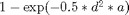
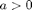
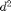
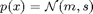
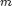
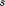

Contents
loss_cdp.m
Summary: Cart-Double-Pendulum loss function; the loss is , where  and  is the squared difference between the actual and desired position of the end of the outer pendulum. The mean and the variance of the loss are computed by averaging over the Gaussian distribution of the state  with mean  and covariance matrix . Derivatives of these quantities are computed when desired.
function [L, dLdm, dLds, S2] = loss_cdp(cost, m, s)
Input arguments:
% cost cost structure % .p lengths of the 2 pendulums [2 x 1 ] % .width array of widths of the cost (summed together) % .expl (optional) exploration parameter % .angle (optional) array of angle indices % .target target state [D x 1 ] % m mean of state distribution [D x 1 ] % s covariance matrix for the state distribution [D x D ] % % *Output arguments:* % % L expected cost [1 x 1 ] % dLdm derivative of expected cost wrt. state mean vector [1 x D ] % dLds derivative of expected cost wrt. state covariance matrix [1 x D^2] % S2 variance of cost [1 x 1 ] % % Copyright (C) 2008-2013 by % Marc Deisenroth, Andrew McHutchon, Joe Hall, and Carl Edward Rasmussen. % % Last modified: 2013-03-07 %
High-Level Steps
- Precomputations
- Define static penalty as distance from target setpoint
- Trigonometric augmentation
- Calculate loss
function [L, dLdm, dLds, S2] = loss_cdp(cost, m, s)
Code
if isfield(cost,'width'); cw = cost.width; else cw = 1; end if ~isfield(cost,'expl') || isempty(cost.expl); b = 0; else b = cost.expl; end % 1. Some precomputations D0 = size(s,2); D = D0; % state dimension D1 = D0 + 2*length(cost.angle); % state dimension (with sin/cos) M = zeros(D1,1); M(1:D0) = m; S = zeros(D1); S(1:D0,1:D0) = s; Mdm = [eye(D0); zeros(D1-D0,D0)]; Sdm = zeros(D1*D1,D0); Mds = zeros(D1,D0*D0); Sds = kron(Mdm,Mdm); % 2. Define static penalty as distance from target setpoint target = [cost.target(:); gTrig(cost.target(:), 0*s, cost.angle)]; ell1 = cost.p(1); ell2 = cost.p(2); C = [1 -ell1 0 -ell2 0; 0 0 ell1 0 ell2]; Q = zeros(D1); Q([1 D+1:D+4],[1 D+1:D+4]) = C'*C; % 3. Trigonometric augmentation i = 1:D0; k = D0+1:D1; [M(k) S(k,k) C mdm sdm Cdm mds sds Cds] = gTrig(M(i),S(i,i),cost.angle); [S Mdm Mds Sdm Sds] = ... fillIn(S,C,mdm,sdm,Cdm,mds,sds,Cds,Mdm,Sdm,Mds,Sds,i,k,D1); % 4. Calculate loss L = 0; dLdm = zeros(1,D0); dLds = zeros(1,D0*D0); S2 = 0; for i = 1:length(cw) % scale mixture of immediate costs cost.z = target; cost.W = Q/cw(i)^2; [r rdM rdS s2 s2dM s2dS] = lossSat(cost, M, S); L = L + r; S2 = S2 + s2; dLdm = dLdm + rdM(:)'*Mdm + rdS(:)'*Sdm; dLds = dLds + rdM(:)'*Mds + rdS(:)'*Sds; if (b~=0 || ~isempty(b)) && abs(s2)>1e-12 L = L + b*sqrt(s2); dLdm = dLdm + b/sqrt(s2) * ( s2dM(:)'*Mdm + s2dS(:)'*Sdm )/2; dLds = dLds + b/sqrt(s2) * ( s2dM(:)'*Mds + s2dS(:)'*Sds )/2; end end % normalize n = length(cw); L = L/n; dLdm = dLdm/n; dLds = dLds/n; S2 = S2/n; % Fill in covariance matrix...and derivatives ----------------------------
function [S Mdm Mds Sdm Sds] = ... fillIn(S,C,mdm,sdm,Cdm,mds,sds,Cds,Mdm,Sdm,Mds,Sds,i,k,D) X = reshape(1:D*D,[D D]); XT = X'; % vectorised indices I=0*X; I(i,i)=1; ii=X(I==1)'; I=0*X; I(k,k)=1; kk=X(I==1)'; I=0*X; I(i,k)=1; ik=X(I==1)'; ki=XT(I==1)'; Mdm(k,:) = mdm*Mdm(i,:) + mds*Sdm(ii,:); % chainrule Mds(k,:) = mdm*Mds(i,:) + mds*Sds(ii,:); Sdm(kk,:) = sdm*Mdm(i,:) + sds*Sdm(ii,:); Sds(kk,:) = sdm*Mds(i,:) + sds*Sds(ii,:); dCdm = Cdm*Mdm(i,:) + Cds*Sdm(ii,:); dCds = Cdm*Mds(i,:) + Cds*Sds(ii,:); S(i,k) = S(i,i)*C; S(k,i) = S(i,k)'; % off-diagonal SS = kron(eye(length(k)),S(i,i)); CC = kron(C',eye(length(i))); Sdm(ik,:) = SS*dCdm + CC*Sdm(ii,:); Sdm(ki,:) = Sdm(ik,:); Sds(ik,:) = SS*dCds + CC*Sds(ii,:); Sds(ki,:) = Sds(ik,:);